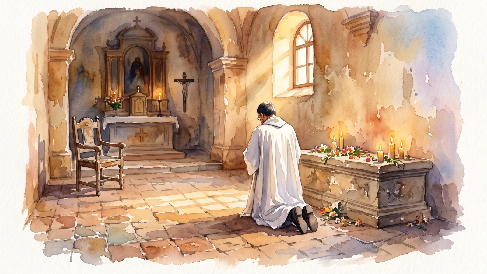

· Lc 6, 12-19
Somos de la casa de Dios
En la tumba de San Martín de Porres me sentí de casa. San Pablo nos dice que somos familiares de Dios, y la familia se queda en la casa.

Hermanos, bendecimos al Señor en esta fiesta de los santos apóstoles Simón y Judas Tadeo. Para meditar la Palabra de hoy, quiero compartirles una experiencia que me ocurrió hace algunos años y que fue casi un milagro.
Cuando inicié mi ministerio sacerdotal me nombraron párroco de San Martín de Porres, una parroquia muy chiquitica y muy pobrecita, pero muy bonita. En ese tiempo salió un curso en Lima. Yo nunca había viajado al Perú y estaba muy contento, porque San Martín, mi patrón, vivió en Lima. En el paseo por la ciudad nos llevaron al monasterio donde él vivió, pero la persona que nos guiaba nos lo mostró todo muy rápido. Es como si yo les dijera: «Miren, esta es Santa Lucía, ahí está el Corazón de Jesús, váyanse». Llegué a la tumba de San Martín, pude rezar un minuto y salir corriendo. Me quedé desconsolado: me hubiera gustado quedarme más tiempo para conocerlo mejor.
Ya en la puerta, a punto de irnos, salió por casualidad el superior del monasterio. Le contamos que veníamos de Venezuela; se quedó callado, me miró y me dijo: «Pídame algo». Yo le respondí: «Déjeme celebrar misa en la tumba de San Martín de Porres». «Claro», me dijo. Nos devolvimos; los demás fueron a la capilla de la tumba y yo a la sacristía a prepararme.
Cuando me di la vuelta, no había nadie. Yo no sabía llegar a la capilla y me perdí dando vueltas por todo el monasterio. Llegué a la escalera donde San Martín rezaba, vi el campanario donde él detuvo en el aire a una persona para que no cayera, como si San Martín me estuviera diciendo: «¿Me querías visitar? Visítame bien». Cuando por fin llegué a la capilla, la única silla donde me podía sentar para decir la misa era la silla de San Martín de Porres. Pude celebrar y rezar un buen rato, y me sentí muy feliz, porque me sentí de casa. Los de casa son los que tienen ese privilegio.
¿Por qué les cuento esto? Porque hoy me llamó la atención un versículo de la carta a los Efesios que hemos leído. San Pablo nos dice que somos familiares de Dios (Ef 2, 19). La expresión que usa en griego, oikeioi tou theou, viene de oikos, la casa: el de la casa es el familiar, el cercano, el íntimo, la persona a quien uno quiere. San Pablo nos revela que somos de la gente de adentro, de los que Dios quiere. Y en la carta a los Gálatas nos hace una declaración muy bonita: «Ya no eres siervo, sino hijo» (Gál 4, 7).
Todos somos criaturas de Dios y estamos llamados a ser sus siervos, es verdad. Pero Jesús no vino para que fuéramos siervos, sino amigos (Jn 15, 15), y más que amigos: familiares de Dios. Por eso dice en el Evangelio que el hijo es el que se queda en la casa para siempre (Jn 8, 35). Y así podemos rezar con el salmo: «Una cosa pido al Señor, eso es lo que busco: habitar en la casa del Señor todos los días de mi vida» (Sal 27 [26], 4).
Hermanos, somos familia de Dios, y la familia se queda en la casa. ¿Cuál es la casa que nos espera? El cielo. Pero en esta tierra nuestra casa es la Iglesia. Yo puedo ser hijo de mi papá, pero no me siento hijo si no lo visito, si no hablo con él, si no le escribo, si no lo llamo. Puedo ser hijo de Dios, pero ¿cómo lo voy a experimentar si no visito su comunidad y no soy una persona de oración? Hablemos con nuestro Padre, para que experimentemos lo que es ser sus hijos en la vida y en los grandes milagros que él puede hacer por nosotros.

Pbro. Rafael VillalobosPárroco de Santa Lucía